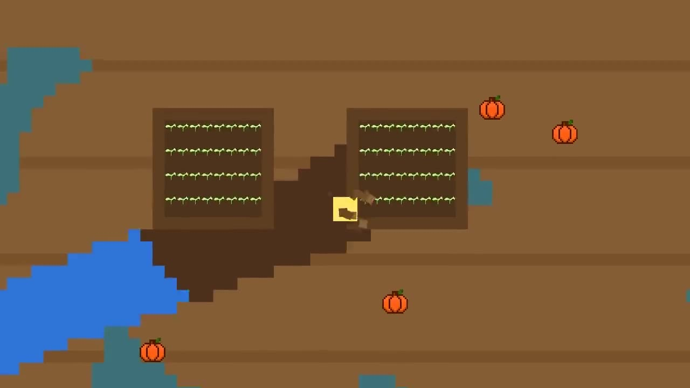
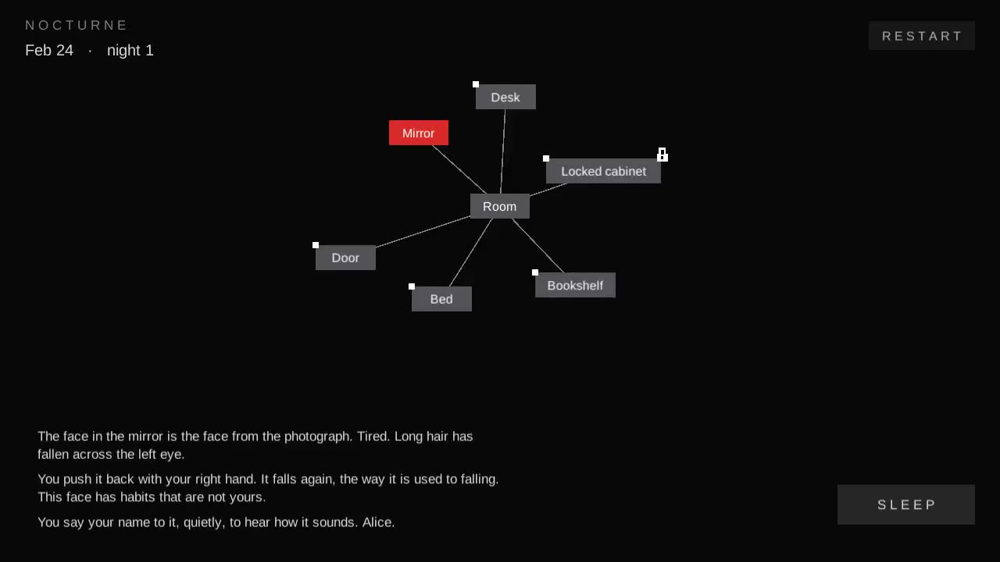

I build what I want to play, then play it until I can say what's wrong with it.
That second part is the job. A card game I have run, broken and rewritten for ten years, and the smaller games I made while learning how to do it — 6 of them playable right here.
Flagship
Own IP · since 2016Astery Gate
Four players, one shared deck of 108. When you take damage, you choose whether it lands on your own life or the team's — and taking it pays you resources.
We played that rule for ten years. It was in neither edition of the rulebook.
Read the case →Games
Hover to watch · click to read and play

Weekly prototypes
5 weeks · 5 gamesMade one a week for a Unity course. The only brief I gave myself: make a game I hadn't played.

DigFlow
An endless runner, but digging.

Snowball
Snowball fight, but Splatoon.

Nocturne
Wake up at night and find yourself.

Lumen
Light dissolves walls — but your own shadow keeps them shut.

Lodestar
Connect your constellation.
Credits
Other people's gamesWhere the work was judging play rather than authoring it.
- 2026GLO — Game as Live Ops, Juice PodProducer & designer · Unreal
Played the inherited build, named every place where the feel fell short, and broke those findings into tasks for the pod. Built the click feedback myself.
- ProHonor of Kings — BTK (Blood Thirsty Kings)Support · pro player
Plays support as Saika for BTK on the international server — one of few women at that level. Selected for Team USA at the 2026 Esports Nations Cup after we won the North American qualifier; top 50 in North America.
- 2020Double Shots — undergraduate capstoneProducer
A VR bartending game in 3D, made over half a year with a team. It was never released; the project is on GitHub. View on GitHub →
About
Short versionEvery player's experience is a story. I want to make the games that let them write it.
I grew up on games, anime and piano — I learned piano by memorising which finger hits which key, not by reading the score, which is why I still love rhythm games. My first game course at UC Santa Cruz gave me Astery Gate, the card game I am still building, now at USC Games.
I also play Honor of Kings professionally — for BTK, and for Team USA at the 2026 Esports Nations Cup.